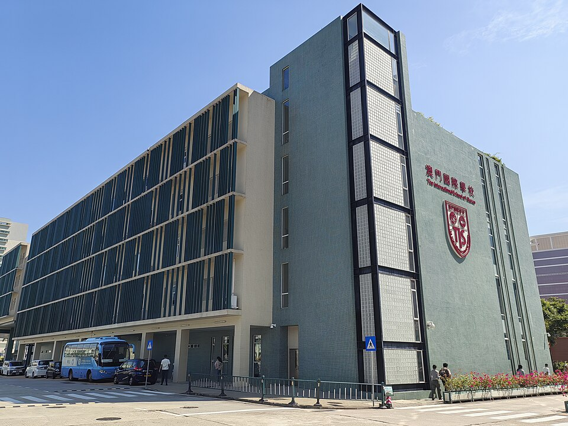

마카오 국제학교(澳門國際學校) 교사 건물 · 사진: Yumeto / Wikimedia Commons, CC BY-SA 4.0
마카오 국제학교(The International School of Macao, TIS) — 아시아에 있지만 졸업장은 캐나다 앨버타주입니다
1. 어떤 학교인가
마카오 국제학교(The International School of Macao, 澳門國際學校, 줄여서 TIS)는 2002년에 문을 연 것으로 알려져 있습니다. 개교 당시에는 학생 수가 아주 적었고, 마카오과학기술대학(MUST) 구내에 자리를 잡은 것으로 전해집니다. 지금도 캠퍼스는 타이파(氹仔)의 같은 대학 구내에 있고, 마카오국제공항과 가까운 위치입니다.
받는 학년은 유아·유치원 과정부터 Grade 12까지입니다. 마카오에서 영어로 수업하는 국제학교 가운데 규모가 큰 축에 드는 학교로 소개되어 있습니다.
※ 재학생 수·학비·합격률 같은 수치는 해마다 달라지고 자료마다 차이가 커서 이 글에서는 쓰지 않겠습니다. 학교 입학처의 올해 안내로 확인하세요.
2. 핵심 — "캐나다 커리큘럼"은 그 자체로는 정보가 아닙니다
여기가 이 글에서 가장 중요한 부분입니다. 미국식·영국식과 달리 캐나다는 교육과정을 주(州)가 각각 정합니다. 연방 단위의 교육부가 전국 교육과정을 운영하는 구조가 아닙니다. 그래서 학교 소개에 "캐나다 커리큘럼"이라고만 적혀 있으면, 학부모 입장에서는 아직 아무것도 모르는 상태입니다.
마카오 국제학교는 캐나다 앨버타(Alberta)주의 교육과정을 운영하고, 앨버타주 교육부의 인증을 받은 것으로 알려져 있습니다. 즉 마카오에 있지만 아이가 배우는 과목 구성과 졸업 요건은 앨버타주 기준을 따라갑니다.
그래서 캐나다식 학교를 비교하실 때 질문은 "캐나다 커리큘럼인가요?"가 아니라 "어느 주의 졸업장입니까?"가 되어야 합니다. 아시아에서 한국 가정이 함께 검토하게 되는 두 학교를 나란히 두면 차이가 분명해집니다.
| 항목 | 마카오 국제학교(TIS) | 홍콩 캐나다국제학교(CDNIS) |
|---|---|---|
| 도시 | 마카오 타이파 | 홍콩 애버딘 |
| 기준이 되는 주 | 앨버타주 | 온타리오주 |
| 고등 졸업장 | 앨버타 고등학교 졸업장 | 온타리오 졸업장(OSSD) |
| IB | 초등 PYP · 고등 DP는 선택 | IB 전 과정 운영으로 알려짐 |
| 한국과의 시차 | 1시간 | 1시간 |
※ 두 학교의 과정 구성은 해마다 조정될 수 있습니다. 위 표는 방향을 잡기 위한 정리이고 확정된 사실로 삼지 마시고 각 학교 입학처의 올해 안내로 확인하세요. CDNIS 쪽은 별도 글에 자세히 정리해 두었습니다.
3. 졸업장은 전원, IB 디플로마는 선택입니다
고등 과정의 구조도 미리 알고 가시는 편이 좋습니다. 공개된 안내에 따르면 이렇게 알려져 있습니다.
· 유아 과정 ~ Grade 6 — IB PYP(초등 탐구 과정)
· Grade 10부터 — 앨버타 고등학교 졸업장 과정을 이수하는 것이 기본
· Grade 11~12 — IB 디플로마는 선택(2017년 무렵 시작된 것으로 전해집니다)
즉 모든 학생이 받는 것은 앨버타주 졸업장이고, 그 위에 IB 디플로마를 더 얹을지를 고르는 구조입니다. 한 학교에서 "졸업장은 전원, IB는 선택"으로 가는 형태는 도쿄의 아오바 재팬이나 베이징의 ISB 베이징에서도 보이는 방식입니다.
여기서 한국 가정이 자주 오해하시는 지점이 있습니다. "IB를 안 하면 편한 길"이 아닙니다. 앨버타 졸업장 쪽으로만 가면 소논문·지식이론 같은 IB 고유의 부담은 없지만, 대신 과목을 스스로 설계해야 할 몫이 늘어납니다. 어떤 과목을 어느 수준으로 담아야 지원하려는 대학의 요건을 채우는지, 그 판단을 가정이 함께 해야 합니다. 그래서 Grade 9 겨울~Grade 10 봄에 과목 신청을 어떻게 내느냐가 2년 뒤의 선택지를 정합니다.
선택을 내리기 전에 학교에 이렇게 물으시면 됩니다. "저희 아이가 Grade 11이 되는 해에 IB 디플로마를 선택하려면 어떤 조건이 필요하고, 선택하지 않으면 시간표는 어떻게 구성됩니까?" 학년과 연도를 넣어서 물으시는 것이 가장 정확합니다.
4. 마카오라는 도시 — 작다는 것의 양면
마카오는 도시 자체가 작습니다. 타이파와 마카오반도는 다리로 이어져 있어 통학 거리는 큰 변수가 아닌 경우가 많습니다. 홍콩이나 상하이처럼 "집을 어디에 구하느냐가 학교를 정한다"는 문제는 상대적으로 덜합니다.
대신 다른 쪽이 어렵습니다. 선택지가 적습니다. 영어로 수업하는 국제학교의 수 자체가 많지 않아서, 자리가 없으면 대안을 같은 도시 안에서 찾기 어렵습니다. 그래서 마카오는 특히 원서 시기와 대기자 명단을 일찍 챙겨야 하는 지역입니다. 이미 다니고 있더라도 다음 학년 자리를 확정하는 재등록 절차를 놓치면 되돌리기가 더 어렵습니다. → 국제학교 재등록(Re-enrollment)
또 하나, 교육 제도상 마카오는 중국 본토와도 홍콩과도 다른 별도 체계입니다. 본토의 외국인 자녀 대상 학교에 적용되는 등록 자격 설명을 마카오에 그대로 가져다 적용하지 마시고, 학교 입학처가 안내하는 서류 요건을 기준으로 삼으세요.
5. 한국(주재원) 학생이 겪는 어려움
· ① 초등 IB PYP는 "진도"가 안 보입니다. 교과서 진도가 아니라 탐구 단원으로 묶여 있어, 부모가 보기에 아이가 뭘 배우는지 모르겠는 시기가 옵니다. → 성적표 읽는 법
· ② Grade 10에서 평가의 무게가 달라집니다. 그때부터 받는 점수가 졸업장 요건에 쌓이기 시작합니다. 중등까지 가볍게 지나온 아이가 여기서 흔들립니다. → 형성평가·총괄평가
· ③ 영어로 된 수학에서 막힙니다. 계산은 되는데 문제 지문을 못 읽고, 풀이 과정을 문장으로 설명하라는 요구에서 점수를 잃습니다. → 알지브라 공부법
· ④ 에세이 형식이 처음입니다. 영어 과목은 물론 사회·과학도 "주장-근거-설명" 구조로 쓰게 합니다. 한국에서 온 아이는 영어 실력과 별개로 형식에서 깎입니다. → 국제학교 영어 공부법
· ⑤ 학년 중간에 들어오면 이수 학점이 그대로 드러납니다. 앨버타 졸업장은 요건이 정해져 있어, 편입 시기에 따라 채워야 할 과목이 달라집니다. → 편입·전학 총정리
6. 그래서 이렇게 준비합니다
· 영어 — 회화가 아니라 학습 영어입니다. 지시어(describe·explain·analyze·evaluate)를 구분하고, 문단을 구조로 쓰는 훈련이 먼저입니다.
· 수학 — 한국에서 배운 개념은 대개 충분합니다. 부족한 건 영어 용어와 서술입니다. 용어를 한국어·영어로 함께 정리하고 풀이를 영어 문장으로 적는 연습을 같이 합니다.
· Grade 9~10 — 과목 신청이 2년 뒤를 정합니다. 대학 방향을 두고 필요한 과목부터 역산합니다. → 과목 신청(Course Selection)
· IB 디플로마를 고른다면 — 과목 6개에 소논문·지식이론·창의체험활동이 함께 붙습니다. 기한 관리가 전부입니다. → IB DP 점수 완전정복
· 과제 관리 — 과제를 받은 주에 기준을 함께 읽고 "무엇을 요구하는지"를 아이 입으로 말하게 합니다. → 숙제·과제 관리
7. 마카오의 강점 — 시차 1시간, 화상과외가 잘 맞습니다
마카오는 한국보다 1시간 느립니다. 마카오 오후 5시가 한국 저녁 6시라, 아이가 학교에서 돌아온 직후에 한국 강사진과 실시간 수업을 잡을 수 있습니다.
그리고 마카오는 도시가 작기 때문에 오히려 화상과외의 이점이 큽니다. 한국어로 교과를 설명해 줄 강사를 현지에서 찾기가 홍콩·싱가포르보다 훨씬 어렵습니다. 영어 회화 수업은 구할 수 있어도, 앨버타 과정의 과목 요건이나 IB 디플로마의 내부평가를 함께 봐 줄 사람은 거의 없습니다. 아이의 실제 과제물과 돌려받은 채점표를 화면에 띄워 놓고 1:1로 함께 읽는 수업이 가장 빠릅니다.
정리
마카오 국제학교(TIS)는 2002년에 문을 연 타이파의 국제학교로, 캐나다 앨버타주 교육과정을 운영하고 초등은 IB PYP, 고등은 앨버타 졸업장이 기본 + IB 디플로마는 선택인 구조로 알려져 있습니다. 캐나다식 학교를 비교하실 때는 "캐나다인가"가 아니라 "어느 주의 졸업장인가"를 먼저 물으세요. 그리고 마카오는 학교 선택지가 적은 도시라 원서 시기와 다음 학년 재등록을 일찍 챙기셔야 합니다. 30분 무료 상담으로 아이의 현재 학년에 맞춰 무엇부터 준비할지 짚어 드리겠습니다.